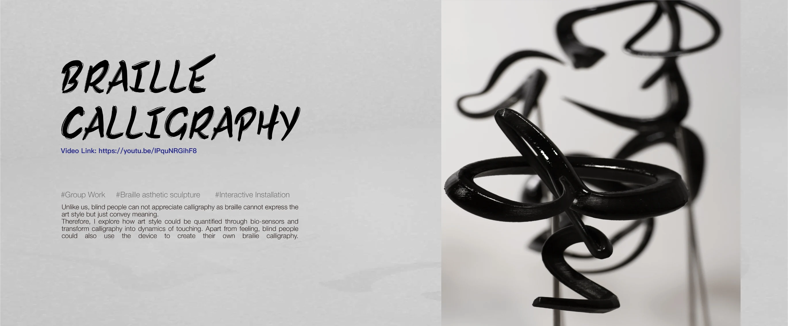
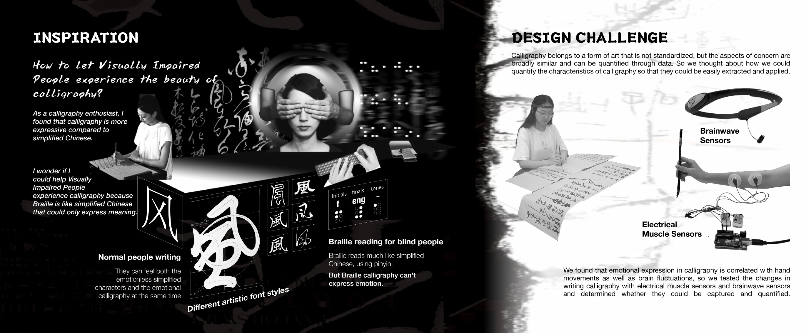
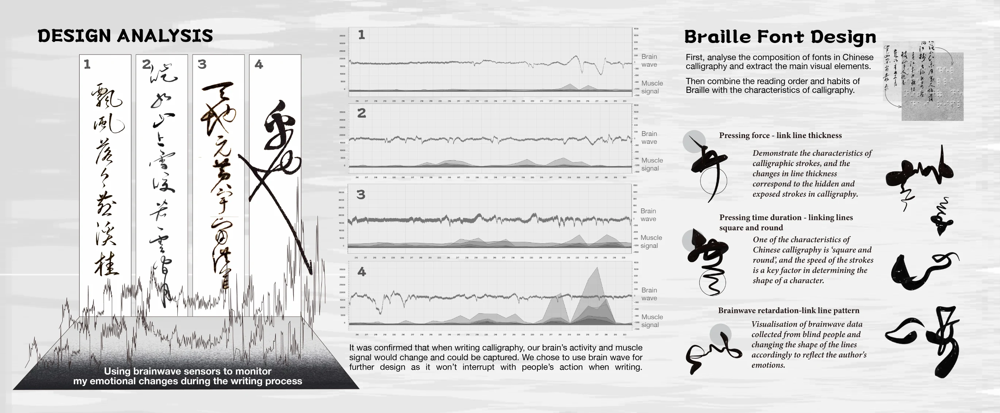
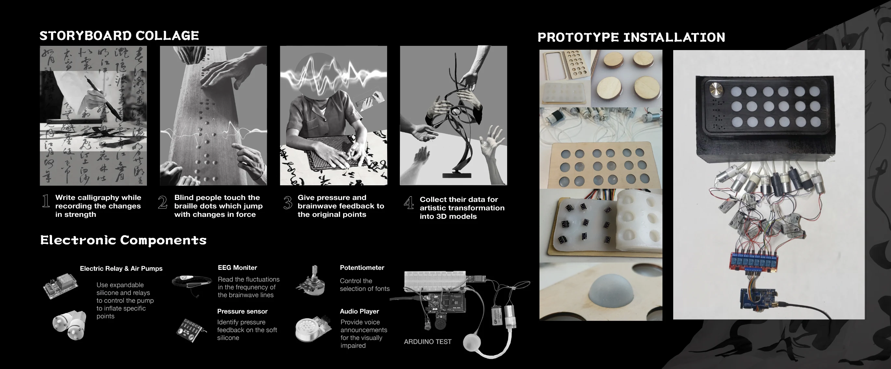
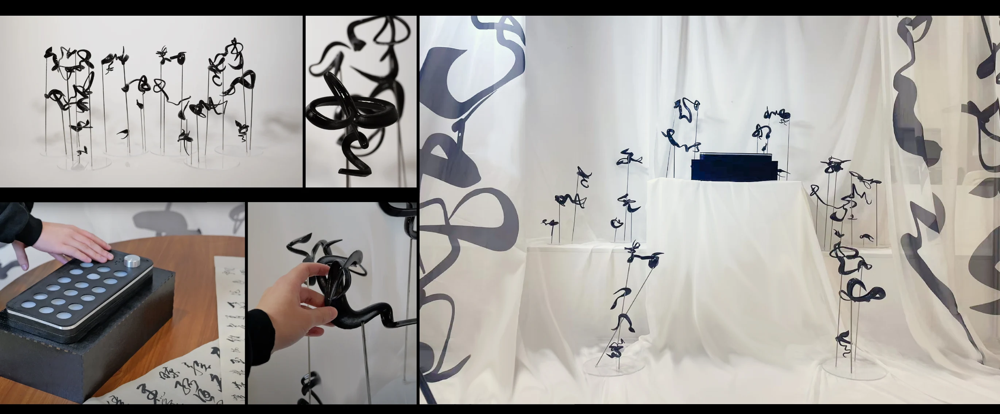

2024 · TEAM WORK
SYNAPSE
Calligraphy Emotion Data Translation Installation
Physiological and movement data captured during writing are translated into sound, touch and Braille forms, expanding visually impaired participation in calligraphy.
PROJECT FILM
PROJECT DOCUMENTATION




